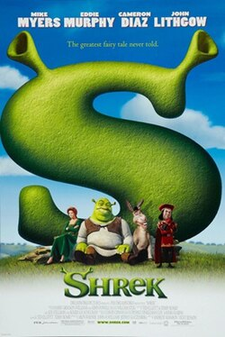

Shrek

Shrek is a 2001 American animated fantasy comedy film directed by Andrew Adamson and Vicky Jenson, and written by Ted Elliott, Terry Rossio, Joe Stillman, and Roger S. H. Schulman, loosely based on the 1990 children's picture book Shrek! by William Steig. It is the first installment in the Shrek film series, and stars Mike Myers, Eddie Murphy, Cameron Diaz and John Lithgow. In the film, an embittered ogre named Shrek (voiced by Myers) finds his home in the swamp overrun by fairy tale creatures banished by the obsessive ruler Lord Farquaad (Lithgow). With the help of Donkey (Murphy), Shrek makes a pact with Farquaad to rescue Princess Fiona (Diaz) in exchange for regaining control of his swamp.